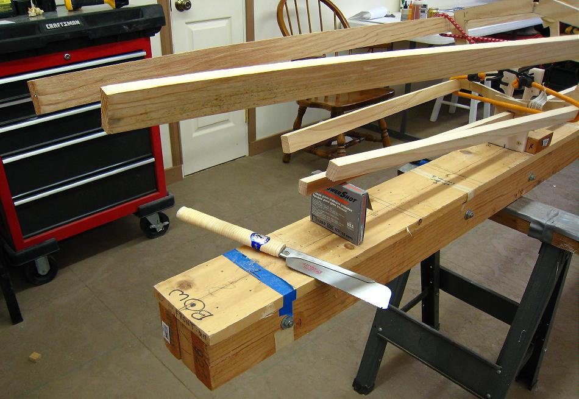

| Stem Plates | Menu Previous Page Next Page |
|

Remove the tape from the stringers in preparation for making and attaching the stem plates. A saw is used to cut off the stringers at the desired length. The length is determined by the overall length of the design, the flex pattern of the stringers, and a shape/ slope of the stems that "looks right" to the builder. The distance from Section 1 to the bow of the Sea Bee is approximately 3ft. and the distance from section 4 to the stern is approximately 2.5ft. This is a good starting point.
|
|